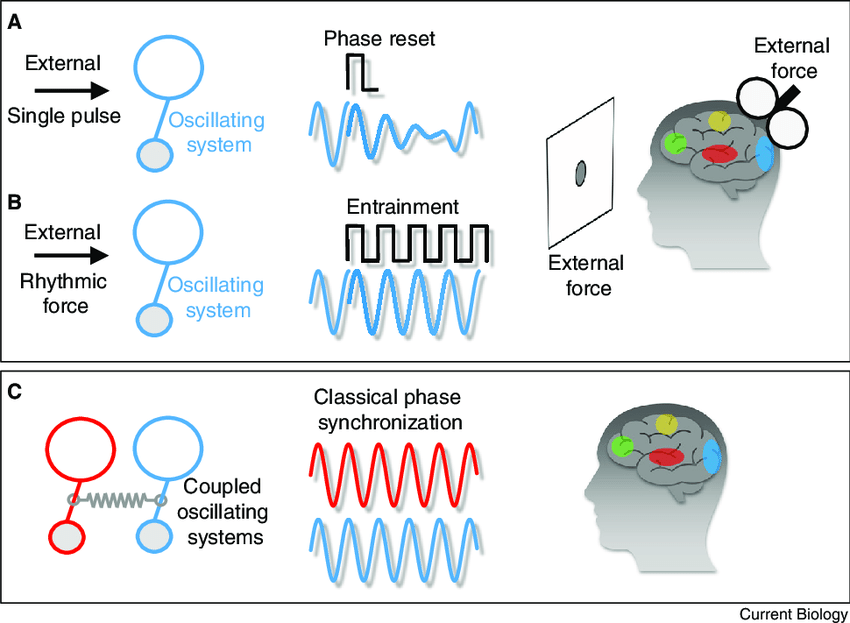

Ever Wondered Why Human Beings are able to walk in such a symmetric manner? Does There Exists a central pattern generator that is responsible for symmetric walking? And If there does exist a central pattern generator can we somehow use it to improve the gait in post stroke patients? Several researchers have pondered over this question and the answer they reached was ENTRAINMENT
Motivation
